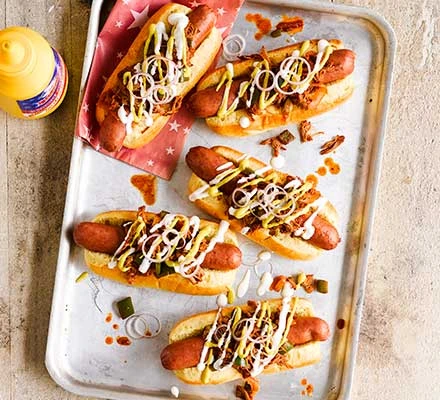

Pulled Pork Sloppy Joe Dogs

Combine three street-food favourites into one awesome hot dog. You could
use shop-bought pulled pork, or go the whole hog and make it yourself
Ingredients
- 1 tbsp sunflower oil
- 2 onions, halved and sliced
- 1 tbsp garlic powder
- 3 garlic cloves, sliced
- 1 tbsp tomato purée
- 1 tsp dried oregano
- ½ tsp smoked paprika
- 500ml chicken stock
- 400g pulled pork
- 2 green peppers, finely chopped
- 1 green chilli, sliced
- 1 tbsp American Mustard
- 8 hot dogs
- 8 hot dog buns
Method
- Step 1
-
Heat the oil in a pan and fry the onions until golden, then tip in the
garlic powder and garlic cloves, and cook for a few minutes. Stir in the
tomato purée, oregano and paprika, then pour in the chicken stock and
bring to the boil. Add the pork and stir through any sauce that comes
with it. Simmer for 1 hr-1 hr 15 mins until reduced, adding the peppers
and chilli 10 mins before the end. Take off the heat and shred the pork
through the sauce, then stir through the mustard and set aside.
- Step 2
-
Heat the hot dogs following pack instructions. When ready to serve, lay
a dog in each bun, spoon over the pork, zigzag over soured cream and
mustard, then finish with the shallots and mustard seeds.